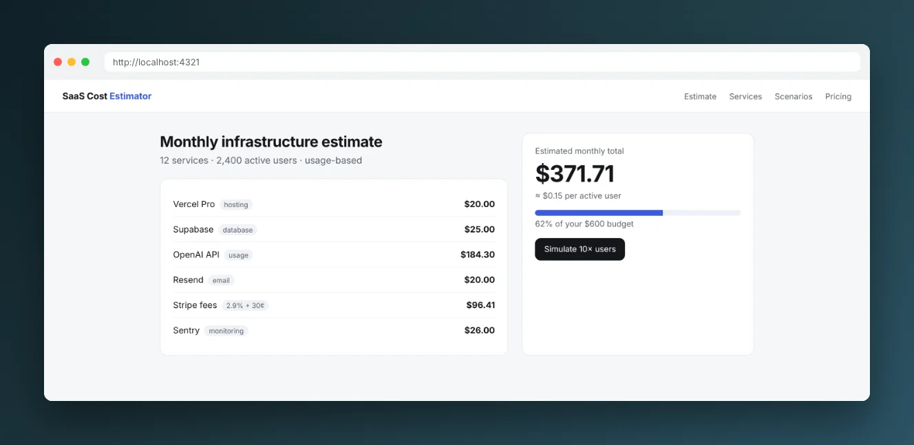
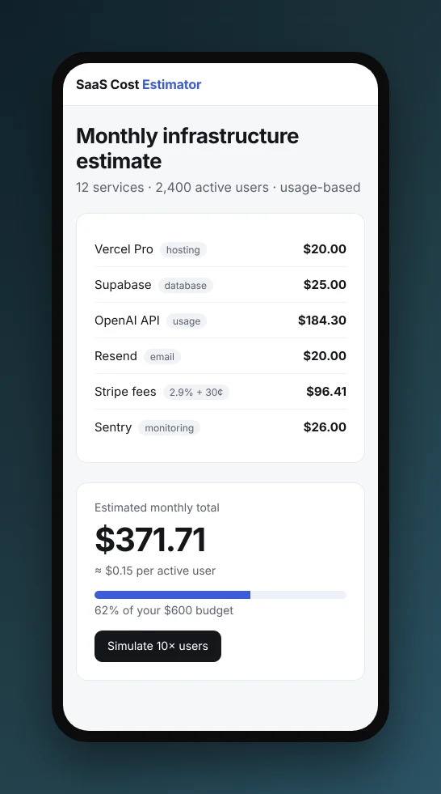
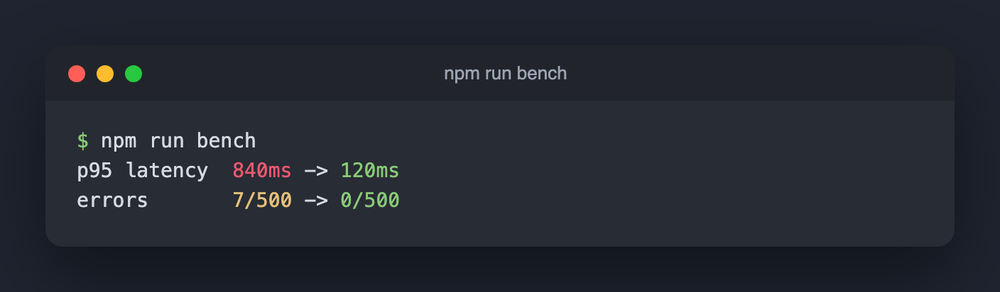
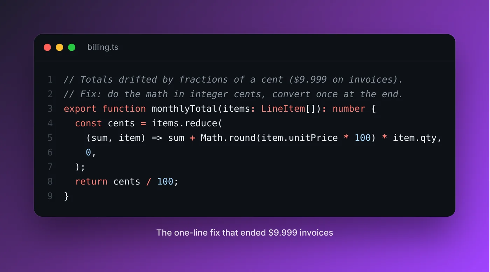

<title>Build Your Product in Public</title>
<meta name="claude:viewport-fit-sides" content="cover">
<meta name="description" content="Open-source agent skill that journals every Claude Code, Codex and Antigravity session across all your projects and turns it into build-in-public posts.">
<link rel="preconnect" href="https://fonts.googleapis.com">
<link rel="preconnect" href="https://fonts.gstatic.com" crossorigin>
<link rel="stylesheet" href="https://fonts.googleapis.com/css2?family=Geist:wght@400;500;600;700&family=Geist+Mono:wght@400;500&family=Newsreader:ital,opsz,wght@1,6..72,400;1,6..72,500&display=swap">
<style>
/* Layout: a builder's logbook. Left-aligned editorial type, one live "journal" panel, then quiet sections on a 1080px column. */
:root {
  --bg: #f6f7f9; --surface: #ffffff; --fg: #101216; --muted: #5a616d; --line: #e2e5ea;
  --ink: #2c4bd4; --ink-soft: #e9edfc; --term: #0d0f13; --term-fg: #d7dbe3; --term-dim: #6f7684;
  --ok: #1f8a4c;
  --display: "Geist", ui-sans-serif, system-ui, -apple-system, "Segoe UI", sans-serif;
  --serif: "Newsreader", Georgia, "Times New Roman", serif;
  --mono: "Geist Mono", ui-monospace, "SF Mono", Menlo, Consolas, monospace;
  --r: 14px;
}
@media (prefers-color-scheme: dark) { :root:not([data-theme="light"]) {
  --bg: #0a0b0d; --surface: #121419; --fg: #eceef2; --muted: #8e95a2; --line: #22262d;
  --ink: #93a6ff; --ink-soft: #181d33; --term: #07080a; --term-fg: #d7dbe3; --term-dim: #6a717e; --ok: #4cc584;
  color-scheme: dark } }
:root[data-theme="dark"] {
  --bg: #0a0b0d; --surface: #121419; --fg: #eceef2; --muted: #8e95a2; --line: #22262d;
  --ink: #93a6ff; --ink-soft: #181d33; --term: #07080a; --term-fg: #d7dbe3; --term-dim: #6a717e; --ok: #4cc584;
  color-scheme: dark }

* { box-sizing: border-box }
body { background: var(--bg); color: var(--fg); font: 400 16px/1.6 var(--display); -webkit-font-smoothing: antialiased }
body::before { content: ""; position: fixed; inset: 0 0 auto; height: env(safe-area-inset-top, 0px); z-index: 10; background: var(--bg) }
a { color: inherit }
em { font-family: var(--serif); font-style: italic; font-weight: 400; letter-spacing: -0.01em }
code, .mono { font-family: var(--mono); font-size: 0.88em }
.wrap { max-width: 1080px; margin: 0 auto; padding-left: max(20px, env(safe-area-inset-left, 0px)); padding-right: max(20px, env(safe-area-inset-right, 0px)) }
section { padding-block: 88px; border-top: 1px solid var(--line) }
h1, h2, h3 { text-wrap: balance; margin: 0; letter-spacing: -0.035em; font-weight: 600 }
h2 { font-size: clamp(30px, 4.4vw, 46px); line-height: 1.08 }
h2 em, h1 em { font-size: 1.04em }
h3 { font-size: 18px; letter-spacing: -0.015em }
p { margin: 0 }
.lede { color: var(--muted); font-size: 18px; max-width: 60ch }
.eyebrow { font: 500 12px/1 var(--mono); letter-spacing: 0.08em; text-transform: uppercase; color: var(--muted) }
.head { display: grid; gap: 16px; margin-bottom: 44px; max-width: 760px }
:focus-visible { outline: 2px solid var(--ink); outline-offset: 3px; border-radius: 6px }

/* nav */
.nav { position: sticky; top: env(safe-area-inset-top, 0px); z-index: 20; background: color-mix(in srgb, var(--bg) 86%, transparent); backdrop-filter: blur(12px); border-bottom: 1px solid var(--line) }
.nav .wrap { display: flex; align-items: center; gap: 24px; height: 60px }
.brand { display: flex; align-items: center; gap: 10px; font-weight: 600; letter-spacing: -0.02em; text-decoration: none; white-space: nowrap }
.mark { width: 22px; height: 22px; border-radius: 6px; background: var(--fg); position: relative; flex: none }
.mark::after { content: ""; position: absolute; left: 5px; right: 5px; top: 6px; height: 2px; background: var(--bg); box-shadow: 0 4px 0 var(--bg), 0 8px 0 var(--bg); border-radius: 2px }
.links { display: flex; gap: 22px; margin-left: auto; font-size: 14px; color: var(--muted) }
.links a { text-decoration: none } .links a:hover { color: var(--fg) }
.pill { display: inline-flex; align-items: center; gap: 8px; border-radius: 999px; padding: 9px 16px; font: 500 14px/1 var(--display); text-decoration: none; border: 1px solid var(--line); background: var(--surface); color: var(--fg); cursor: pointer; white-space: nowrap }
.pill.solid { background: var(--fg); color: var(--bg); border-color: var(--fg) }
.pill:hover { border-color: var(--fg) }
@media (max-width: 760px) { .links { display: none } .nav .pill { margin-left: auto } }

/* hero */
.hero { padding-block: 72px 88px; border: 0 }
.hero-grid { display: grid; grid-template-columns: 1.02fr 1fr; gap: 56px; align-items: start }
.hero-grid > *, .split > *, .qs > *, .gallery > * { min-width: 0 }
.hero h1 { font-size: clamp(42px, 6.6vw, 76px); line-height: 1.0; margin: 18px 0 22px }
.hero .lede { font-size: 19px }
.agents { display: flex; flex-wrap: wrap; gap: 8px; margin-top: 26px }
.chip { font: 500 12.5px/1 var(--mono); padding: 7px 10px; border-radius: 999px; border: 1px solid var(--line); color: var(--muted); background: var(--surface) }
@media (max-width: 900px) { .hero-grid { grid-template-columns: 1fr; gap: 40px } }

/* install */
.install { margin-top: 30px; border: 1px solid var(--line); border-radius: var(--r); background: var(--surface); overflow: hidden; max-width: 560px }
.tabs { display: flex; gap: 2px; padding: 6px; border-bottom: 1px solid var(--line); overflow-x: auto }
.tab { font: 500 13px/1 var(--display); padding: 8px 12px; border-radius: 8px; border: 0; background: none; color: var(--muted); cursor: pointer; white-space: nowrap }
.tab[aria-selected="true"] { background: var(--ink-soft); color: var(--fg) }
.cmd { display: flex; align-items: center; gap: 12px; padding: 14px 14px 14px 16px; min-width: 0 }
.cmd pre { margin: 0; flex: 1; min-width: 0; overflow-x: auto; font: 13px/1.5 var(--mono); white-space: pre }
.cmd pre::before { content: "$ "; color: var(--muted) }
.cmd.ps pre::before { content: "PS> " }
.copy { flex: none; font: 500 12px/1 var(--display); padding: 8px 10px; border-radius: 8px; border: 1px solid var(--line); background: var(--bg); color: var(--fg); cursor: pointer }
.cta-row { display: flex; flex-wrap: wrap; gap: 10px; margin-top: 18px; align-items: center }
.note { font-size: 13px; color: var(--muted) }

/* journal panel */
.panel { background: var(--term); color: var(--term-fg); border-radius: 18px; box-shadow: 0 30px 70px -30px rgba(10, 14, 30, .45), 0 0 0 1px rgba(255, 255, 255, .06) inset; overflow: hidden; min-width: 0 }
.panel-bar { display: flex; align-items: center; gap: 7px; padding: 13px 16px; border-bottom: 1px solid rgba(255, 255, 255, .07); font: 12px var(--mono); color: var(--term-dim) }
.panel-bar i { width: 10px; height: 10px; border-radius: 50%; background: #3a3f48 }
.panel-bar span { margin-left: 8px; overflow: hidden; text-overflow: ellipsis; white-space: nowrap }
.log { padding: 16px 18px 6px; font: 12.8px/1.55 var(--mono); display: grid; gap: 12px }
.entry { display: grid; grid-template-columns: 46px 1fr; gap: 10px; animation: rise .7s cubic-bezier(.2, .7, .2, 1) both }
.entry:nth-child(2) { animation-delay: .25s } .entry:nth-child(3) { animation-delay: .5s } .entry:nth-child(4) { animation-delay: .75s }
.t { color: var(--term-dim) }
.who { color: #9fb0ff } .proj { color: #e7e9ee } .tag { color: #f2c97d } .dim { color: var(--term-dim) }
.brief { margin: 10px 12px 12px; background: #f7f8fb; color: #14161a; border-radius: 12px; padding: 16px 16px 14px; display: grid; gap: 10px; animation: rise .8s 1s cubic-bezier(.2, .7, .2, 1) both }
.brief .eyebrow { color: #5a616d }
.brief h3 { font-size: 16px }
.brief .hook { font-family: var(--serif); font-style: italic; font-size: 17px; line-height: 1.35; color: #14161a; border-left: 2px solid #2c4bd4; padding-left: 12px }
.brief .row { display: flex; flex-wrap: wrap; gap: 6px }
.brief .row span { font: 500 11.5px/1 var(--mono); padding: 6px 8px; border-radius: 6px; background: #eaedf3; color: #3b414c }
.example { font: 500 10.5px/1 var(--mono); letter-spacing: .06em; text-transform: uppercase; color: var(--term-dim); padding: 0 18px 14px; text-align: right }
@keyframes rise { from { transform: translateY(6px) } to { transform: none } }

/* problem */
.split { display: grid; grid-template-columns: 1fr 1fr; gap: 56px; align-items: start }
.split .lede + .lede { margin-top: 14px }
.quote { font-family: var(--serif); font-style: italic; font-size: clamp(24px, 3vw, 32px); line-height: 1.25; letter-spacing: -0.01em }
@media (max-width: 820px) { .split { grid-template-columns: 1fr; gap: 28px } }

/* steps */
.steps { display: grid; grid-template-columns: repeat(4, 1fr); border: 1px solid var(--line); border-radius: var(--r); background: var(--surface); overflow: hidden }
.step { padding: 26px 22px 24px; display: grid; gap: 10px; align-content: start; border-right: 1px solid var(--line); min-width: 0 }
.step:last-child { border-right: 0 }
.step .n { font: 500 12px/1 var(--mono); color: var(--ink) }
.step p { color: var(--muted); font-size: 15px }
.step code { color: var(--fg); background: var(--bg); border: 1px solid var(--line); padding: 1px 5px; border-radius: 5px; font-size: 12px; overflow-wrap: anywhere }
@media (max-width: 900px) { .steps { grid-template-columns: 1fr 1fr } .step:nth-child(2) { border-right: 0 } .step:nth-child(-n+2) { border-bottom: 1px solid var(--line) } }
@media (max-width: 520px) { .steps { grid-template-columns: 1fr } .step { border-right: 0; border-bottom: 1px solid var(--line) } .step:last-child { border-bottom: 0 } }

/* gallery */
.gallery { display: grid; grid-template-columns: 2.2fr 1fr; gap: 18px; align-items: start }
.gallery figure { margin: 0; display: grid; gap: 10px; min-width: 0 }
.gallery img { width: 100%; height: auto; border-radius: 12px; display: block; border: 1px solid var(--line) }
.gallery .wide { grid-column: 1 / -1 }
figcaption { font-size: 13.5px; color: var(--muted) }
figcaption code { color: var(--fg) }
@media (max-width: 760px) { .gallery { grid-template-columns: 1fr } .gallery .phone { max-width: 320px } }

/* chat */
.chat { border: 1px solid var(--line); border-radius: 18px; background: var(--surface); padding: 20px; display: grid; gap: 14px; max-width: 560px; justify-self: end; width: 100% }
.chat .meta { font: 12px var(--mono); color: var(--muted); display: flex; gap: 8px; align-items: center }
.chat .meta b { width: 8px; height: 8px; border-radius: 50%; background: var(--ok); display: inline-block }
.msg { padding: 12px 14px; border-radius: 14px; font-size: 15px; line-height: 1.5; max-width: 92% }
.msg.agent { background: var(--bg); border: 1px solid var(--line); border-top-left-radius: 4px }
.msg.you { background: var(--fg); color: var(--bg); justify-self: end; border-top-right-radius: 4px }
.opts { display: flex; flex-wrap: wrap; gap: 8px }
.opts span { font-size: 13px; padding: 7px 11px; border-radius: 999px; border: 1px solid var(--line); color: var(--muted) }
.bullets { display: grid; gap: 14px; margin-top: 26px; padding: 0; list-style: none }
.bullets li { display: grid; grid-template-columns: 22px 1fr; gap: 10px; color: var(--muted) }
.bullets li::before { content: ""; width: 10px; height: 10px; border: 1.5px solid var(--ink); border-radius: 3px; margin-top: 7px }
.bullets b { color: var(--fg); font-weight: 600 }

/* terminal */
.term { background: var(--term); color: var(--term-fg); border-radius: var(--r); overflow-x: auto; font: 13px/1.65 var(--mono); padding: 20px 22px; box-shadow: 0 0 0 1px rgba(255, 255, 255, .05) inset }
.term pre { margin: 0; white-space: pre }
.term .p { color: #9fb0ff } .term .h { color: #ffffff; font-weight: 500 } .term .d { color: var(--term-dim) } .term .g { color: #f2c97d }

/* privacy + table */
.cards { display: grid; grid-template-columns: repeat(3, 1fr); gap: 0; border-top: 1px solid var(--line) }
.cards div { padding: 22px 22px 22px 0; border-bottom: 1px solid var(--line); display: grid; gap: 6px; align-content: start }
.cards p { color: var(--muted); font-size: 15px }
@media (max-width: 820px) { .cards { grid-template-columns: 1fr } }
.tablewrap { overflow-x: auto; border: 1px solid var(--line); border-radius: var(--r); background: var(--surface) }
table { border-collapse: collapse; width: 100%; min-width: 620px; font-size: 14.5px }
th, td { text-align: left; padding: 13px 16px; border-bottom: 1px solid var(--line); vertical-align: top }
th { font: 500 12px var(--mono); letter-spacing: .06em; text-transform: uppercase; color: var(--muted) }
tr:last-child td { border-bottom: 0 }
td:first-child { color: var(--muted) }

/* quick start + faq */
.qs { display: grid; grid-template-columns: 1fr 1fr; gap: 48px; align-items: start }
.qs ol { margin: 22px 0 0; padding: 0; list-style: none; display: grid; gap: 16px; counter-reset: s }
.qs li { counter-increment: s; display: grid; grid-template-columns: 30px 1fr; gap: 8px; color: var(--muted) }
.qs li::before { content: counter(s); font: 500 12px/24px var(--mono); width: 24px; height: 24px; border-radius: 50%; border: 1px solid var(--line); text-align: center; color: var(--fg) }
.qs li b { color: var(--fg); font-weight: 600 }
@media (max-width: 820px) { .qs { grid-template-columns: 1fr } }
details { border-bottom: 1px solid var(--line); padding-block: 18px }
details:first-of-type { border-top: 1px solid var(--line) }
summary { cursor: pointer; font-weight: 500; letter-spacing: -0.01em; list-style: none; display: flex; justify-content: space-between; gap: 16px }
summary::after { content: "+"; font: 400 20px/1 var(--mono); color: var(--muted) }
details[open] summary::after { content: "–" }
details p { color: var(--muted); margin-top: 10px; max-width: 64ch }

.closing { text-align: left; padding-block: 96px }
.closing h2 { font-size: clamp(34px, 5.4vw, 60px); max-width: 16ch }
footer { border-top: 1px solid var(--line); padding-block: 28px 40px; font-size: 13.5px; color: var(--muted) }
footer .wrap { display: flex; flex-wrap: wrap; gap: 12px 24px; align-items: center }
footer nav { display: flex; gap: 18px; margin-left: auto; flex-wrap: wrap }

@media (prefers-reduced-motion: reduce) { .entry, .brief { animation: none } }
@media (max-width: 520px) { section { padding-block: 64px } .hero { padding-block: 44px 64px } }
</style>

<header class="nav">
  <div class="wrap">
    <a class="brand" href="#top"><span class="mark" aria-hidden="true"></span>Build Your Product in Public</a>
    <nav class="links" aria-label="Sections">
      <a href="#how">How it works</a><a href="#screenshots">Screenshots</a><a href="#privacy">Privacy</a><a href="#faq">FAQ</a>
    </nav>
    <a class="pill" href="https://github.com/chetanya1998/build-in-public">★ GitHub</a>
  </div>
</header>

<main id="top">
  <section class="hero">
    <div class="wrap hero-grid">
      <div>
        <div class="eyebrow">Open-source agent skill · MIT</div>
        <h1>You already built it. <em>Now tell the story.</em></h1>
        <p class="lede">While you code with Claude Code, Codex or Antigravity, it logs what you built and why, and asks before capturing anything worth showing. At the time you choose, it finds the conversations closest to your day's work and sends you a gist with 5 to 7 posts to pick from. You choose one, review the draft, and post it yourself.</p>

        <div class="install" data-tabs>
          <div class="tabs" role="tablist" aria-label="Install command">
            <button class="tab" role="tab" id="t-unix" aria-selected="true" data-os="unix">macOS · Linux</button>
            <button class="tab" role="tab" id="t-win" aria-selected="false" data-os="win">Windows</button>
            <button class="tab" role="tab" id="t-uv" aria-selected="false" data-os="uv">All projects (CLI)</button>
          </div>
          <div class="cmd" data-panel="unix"><pre>git clone https://github.com/chetanya1998/build-in-public.git && cd build-in-public && sh install.sh</pre><button class="copy" type="button">Copy</button></div>
          <div class="cmd ps" data-panel="win" hidden><pre>irm https://raw.githubusercontent.com/chetanya1998/build-in-public/main/install.ps1 | iex</pre><button class="copy" type="button">Copy</button></div>
          <div class="cmd" data-panel="uv" hidden><pre>curl -fsSL https://raw.githubusercontent.com/chetanya1998/build-in-public/main/install-cli.sh | sh</pre><button class="copy" type="button">Copy</button></div>
        </div>
        <div class="cta-row">
          <a class="pill solid" href="#quickstart">Get started</a>
          <a class="pill" href="https://github.com/chetanya1998/build-in-public">Star on GitHub</a>
          <span class="note">Python 3.9+ · no API keys · no passwords · never posts for you</span>
        </div>
        <div class="agents" aria-label="Works with">
          <span class="chip">Claude Code</span><span class="chip">Codex</span><span class="chip">Antigravity</span><span class="chip">macOS</span><span class="chip">Windows</span><span class="chip">Linux</span>
        </div>
      </div>

      <div class="panel" aria-label="Example of a day's journal and summary">
        <div class="panel-bar"><i></i><i></i><i></i><span>.buildinpublic/log/2026-11-09.md</span></div>
        <div class="log">
          <div class="entry"><span class="t">09:42</span><div><span class="who">claude-code</span> · <span class="proj">saas-cost-estimator</span><br>Fix pricing rounding bug <span class="dim">· 46m</span> <span class="tag">#war-story #metric</span></div></div>
          <div class="entry"><span class="t">11:15</span><div><span class="who">codex</span> · <span class="proj">saas-cost-estimator</span><br>Add usage-based Stripe metering <span class="dim">· 1h 12m</span> <span class="tag">#decision</span></div></div>
          <div class="entry"><span class="t">14:03</span><div><span class="who">antigravity</span> · <span class="proj">landing-page</span><br>Verified signup flow in the browser <span class="dim">· 38m</span> <span class="tag">#visual</span></div></div>
          <div class="entry"><span class="t">16:30</span><div><span class="who">codex</span> · <span class="proj">client-portal</span> <span class="dim">· journal only, never used for posts</span></div></div>
        </div>
        <div class="brief">
          <div class="eyebrow">19:00 · Your daily gist</div>
          <h3>Fixed invoice totals that drifted by fractions of a cent</h3>
          <p class="hook">1. “I lost 46 minutes to a bug in our invoices. The fix was one line.”</p>
          <div class="row"><span>6 suggested posts</span><span>1 approved capture</span><span>nearest trend linked</span></div>
        </div>
        <div class="example">Example day</div>
      </div>
    </div>
  </section>

  <section>
    <div class="wrap split">
      <p class="quote">You ship something real almost every day. Your feed says you haven't shipped in weeks.</p>
      <div>
        <p class="lede">The work happens inside agent sessions, spread across three tools and five repos. By evening you can't remember what was hard, what moved, or why anyone would care.</p>
        <p class="lede">Build Your Product in Public keeps the record for you, keeps the exact anecdote (the error, the wrong guess, the fix), and turns it into posts in your voice. Your story builds up long before you start marketing.</p>
      </div>
    </div>
  </section>

  <section id="how">
    <div class="wrap">
      <div class="head">
        <div class="eyebrow">How it works</div>
        <h2>From session to post, <em>without changing how you work.</em></h2>
      </div>
      <div class="steps">
        <div class="step"><span class="n">1 · Log</span><h3>While you code</h3><p>After each meaningful task your agent adds a short entry to today's log: what, why, the struggle, the result, and the exact anecdote.</p><code>.buildinpublic/log/</code></div>
        <div class="step"><span class="n">2 · Capture</span><h3>Only with your OK</h3><p>Tests green after a fight, a benchmark, a new screen: your agent asks before saving terminal output or a browser screenshot.</p><code>1) terminal 2) browser 3) skip</code></div>
        <div class="step"><span class="n">3 · Gist</span><h3>At the time you choose</h3><p>It reads the day's sessions and commits, searches for the trends nearest to your work, and sends 5 to 7 suggested posts by notification and optional email.</p><code>brief_time 19:00</code></div>
        <div class="step"><span class="n">4 · Post</span><h3>You pick, it drafts</h3><p>Say "write post 2". Revise it, approve it, and it can ride along with your next commit so you can copy it from GitHub.</p><code>.buildinpublic/posts/</code></div>
      </div>
    </div>
  </section>

  <section id="screenshots">
    <div class="wrap">
      <div class="head">
        <div class="eyebrow">Screenshots</div>
        <h2>Images that look <em>worth posting.</em></h2>
        <p class="lede">Terminal captures of the moment it went green, framed browser and phone shots of your running app, and code images of the lines that mattered. All of it is unedited output, and nothing is captured without a yes.</p>
      </div>
      <div class="gallery">
        <figure><figcaption><code>capture.py browser --url http://localhost:4321 --mobile</code> · desktop</figcaption></figure>
        <figure class="phone"><figcaption>Same capture, mobile</figcaption></figure>
        <figure class="wide"><figcaption><code>capture.py terminal --cmd "npm run bench"</code> · redacted text for the story, an image for the post</figcaption></figure>
        <figure class="wide"><figcaption><code>buildinpublic shot code billing.ts --caption "…"</code> · five themes, syntax coloured, line numbers kept</figcaption></figure>
      </div>
    </div>
  </section>

  <section id="nudge">
    <div class="wrap split">
      <div>
        <div class="head" style="margin-bottom:0">
          <div class="eyebrow">Reminders · with the CLI</div>
          <h2>Two quiet days? <em>Your agent asks.</em></h2>
          <p class="lede">After two days without a post (you choose the number), you get a notification. The next time you open Claude Code, Codex or Antigravity, your agent starts with a short conversation.</p>
        </div>
        <ul class="bullets">
          <li><span><b>A draft is waiting.</b> Post it, tweak it, or skip it.</span></li>
          <li><span><b>Your last session.</b> Turn it into a post in one step.</span></li>
          <li><span><b>Nothing worth posting?</b> Tell it what you're working on and it becomes a "what I'm building" post.</span></li>
          <li><span><b>Not coding lately?</b> It offers a low-effort idea: a lesson, a question, a look at your setup.</span></li>
        </ul>
      </div>
      <div class="chat" aria-label="Example conversation at session start">
        <div class="meta"><b></b> Claude Code · session start</div>
        <div class="msg agent">Quick one before we start: it's been 2 days since your last post. Your draft <i>"The one-line fix that ended $9.999 invoices"</i> is ready.</div>
        <div class="opts"><span>Post it</span><span>Edit first</span><span>Skip</span></div>
        <div class="msg you">Skip that. The 10× user simulation I'm building now is more interesting.</div>
        <div class="msg agent">Good call. Give me one sentence on what it shows, and I'll draft a "what I'm building" post with a screenshot of the simulator.</div>
      </div>
    </div>
  </section>

  <section id="journal">
    <div class="wrap">
      <div class="head">
        <div class="eyebrow">Optional · the buildinpublic CLI</div>
        <h2>One journal across <em>every repo and every agent.</em></h2>
        <p class="lede">Jumping between repos? The companion CLI journals every session in every project, finds new projects on its own, and works on macOS, Windows and Linux. Even if you never post, you get a searchable record of what you built with AI and where your week went.</p>
      </div>
      <div class="term" role="img" aria-label="Terminal output of buildinpublic today">
<pre><span class="p">$</span> buildinpublic today
<span class="h"># Journal · Monday, 09 November 2026</span>
4 session(s) across 3 project(s) · 3h 14m with AI agents

<span class="h">## saas-cost-estimator  ·  1h 58m  ·  content on</span>
- <span class="h">09:42</span> [claude-code] Fix pricing rounding bug  (46m, score 7) <span class="g">#war-story #metric</span>
- <span class="h">11:15</span> [codex] Add usage-based Stripe metering  (1h 12m, score 5) <span class="g">#decision</span>
<span class="h">## landing-page  ·  38m  ·  content on</span>
- <span class="h">14:03</span> [antigravity] Verified signup flow in the browser  (38m, score 4) <span class="g">#visual</span>
<span class="h">## client-portal  ·  38m  ·  journal only</span>
- <span class="h">16:30</span> [codex] Refactor the invoice exporter  (38m, score 1)

<span class="p">$</span> buildinpublic search stripe webhook
<span class="d">2026-10-28  saas-cost-estimator  [claude-code] Retry failed Stripe webhooks</span></pre>
      </div>
    </div>
  </section>

  <section id="privacy">
    <div class="wrap">
      <div class="head">
        <div class="eyebrow">Privacy</div>
        <h2>Private by default. <em>Yours to share.</em></h2>
      </div>
      <div class="cards">
        <div><h3>Stays on your machine</h3><p>Sessions are read where your agents already save them. Nothing is uploaded. Optional related-reading searches send only short keywords.</p></div>
        <div><h3>Redacted before writing</h3><p>API keys, tokens, private keys, database URLs and emails are removed, plus any term you list as off-limits.</p></div>
        <div><h3>Journal only until you say</h3><p>New projects are logged privately. Content is switched on per project, and client folders can be excluded entirely.</p></div>
        <div><h3>Asks before every capture</h3><p>Screenshots are only taken after a yes, or a per-project "always" you set yourself.</p></div>
        <div><h3>Never posts</h3><p>It writes drafts. Only posts you approved go into commits, and only if you turned sharing on. You post them yourself.</p></div>
        <div><h3>No passwords</h3><p>The gist email needs only your address. It's sent through Apple Mail or your system's sendmail. Windows uses a Gmail app password kept in Credential Manager.</p></div>
      </div>
    </div>
  </section>

  <section id="platforms">
    <div class="wrap">
      <div class="head">
        <div class="eyebrow">Works where you work</div>
        <h2>macOS, Windows and Linux, <em>natively.</em></h2>
      </div>
      <div class="tablewrap">
        <table>
          <thead><tr><th></th><th>macOS</th><th>Windows</th><th>Linux</th></tr></thead>
          <tbody>
            <tr><td>Runs on schedule with</td><td>launchd</td><td>Task Scheduler</td><td>cron, or systemd timers</td></tr>
            <tr><td>Notifications</td><td>Notification Center</td><td>Toast notifications</td><td>notify-send</td></tr>
            <tr><td>Screenshot permission</td><td>Native dialog</td><td>Message box</td><td>zenity / kdialog</td></tr>
            <tr><td>Gist email</td><td>Apple Mail, no password</td><td>Gmail app password</td><td>sendmail, no password</td></tr>
            <tr><td>Sessions found in</td><td colspan="3"><code>~/.claude</code> · <code>~/.codex</code> · <code>~/.gemini</code>, plus WSL on Windows</td></tr>
          </tbody>
        </table>
      </div>
    </div>
  </section>

  <section id="quickstart">
    <div class="wrap qs">
      <div>
        <div class="head" style="margin-bottom:0">
          <div class="eyebrow">Quick start</div>
          <h2>Five minutes to <em>your first gist.</em></h2>
        </div>
        <ol>
          <li><span><b>Install the skill</b> into Claude Code, Codex and Antigravity, then restart your agent.</span></li>
          <li><span><b>Open your project</b> and say "set up build in public". It reads your README first and asks only what it can't work out: audience, voice, off-limits, gist time, email.</span></li>
          <li><span><b>Code as usual.</b> Say yes or no when it offers a capture.</span></li>
          <li><span><b>Pick a post</b> from the gist: "write post 2 for LinkedIn". Optional: add the CLI for every project and reminders.</span></li>
        </ol>
      </div>
      <div>
        <div class="install" data-tabs style="margin-top:0">
          <div class="tabs" role="tablist" aria-label="Install command">
            <button class="tab" role="tab" aria-selected="true" data-os="unix">macOS · Linux</button>
            <button class="tab" role="tab" aria-selected="false" data-os="win">Windows</button>
            <button class="tab" role="tab" aria-selected="false" data-os="uv">All projects (CLI)</button>
          </div>
          <div class="cmd" data-panel="unix"><pre>git clone https://github.com/chetanya1998/build-in-public.git && cd build-in-public && sh install.sh</pre><button class="copy" type="button">Copy</button></div>
          <div class="cmd ps" data-panel="win" hidden><pre>irm https://raw.githubusercontent.com/chetanya1998/build-in-public/main/install.ps1 | iex</pre><button class="copy" type="button">Copy</button></div>
          <div class="cmd" data-panel="uv" hidden><pre>curl -fsSL https://raw.githubusercontent.com/chetanya1998/build-in-public/main/install-cli.sh | sh</pre><button class="copy" type="button">Copy</button></div>
        </div>
        <div class="term" style="margin-top:14px">
<pre><span class="p">you ›</span> set up build in public
<span class="d">reads README and package.json, asks 4 questions…</span>
  ✓ .buildinpublic/ created     ✓ logging rule in AGENTS.md
  ✓ gist scheduled at 19:00     ✓ email to you@example.com
<span class="p">you ›</span> write post 2 for LinkedIn
<span class="d">drafts it with the real anecdote and the approved capture</span></pre>
        </div>
      </div>
    </div>
  </section>

  <section id="faq">
    <div class="wrap">
      <div class="head"><div class="eyebrow">FAQ</div><h2>Questions</h2></div>
      <details><summary>Does it post to X or LinkedIn for me?</summary><p>No. It suggests posts and drafts the one you pick. You post it yourself, then tell your agent "I posted it" so later posts can call back to it.</p></details>
      <details><summary>Does it work on Windows?</summary><p>Yes, through the <code>buildinpublic</code> CLI, which installs with one PowerShell line, schedules with Task Scheduler and notifies with Windows toasts. The skill's per-project scripts need macOS or Linux.</p></details>
      <details><summary>Do I need an API key?</summary><p>No. The brief is written by the agent you already use, Claude Code or Codex, running headless at your gist time. Without one, the gist still arrives from what was found that day, and your agent writes the rest when you ask.</p></details>
      <details><summary>How does it know what I did?</summary><p>It reads the session files Claude Code, Codex and Antigravity already save on your computer, and your git history. It doesn't record your screen or keystrokes.</p></details>
      <details><summary>What if nothing interesting happened today?</summary><p>The summary says so and tells you why: only maintenance, no measurable result, nothing visual. Then it suggests low-effort posts and what to capture tomorrow. It won't pad a weak day into a fake story.</p></details>
      <details><summary>I do client work. Is that safe?</summary><p>Add the folder to the exclude list and it's never read. Or leave the project journal only: you get the log, and it's never used for content.</p></details>
      <details><summary>Can I get the gist by email?</summary><p>Yes, and it needs only your address. On macOS it's sent through Apple Mail, on Linux through sendmail. On Windows the CLI uses a Gmail app password stored in Credential Manager.</p></details>
    </div>
  </section>

  <section class="closing">
    <div class="wrap">
      <h2>Build it. <em>Then let it tell itself.</em></h2>
      <div class="cta-row" style="margin-top:26px">
        <a class="pill solid" href="#quickstart">Install the skill</a>
        <a class="pill" href="https://github.com/chetanya1998/build-in-public">View on GitHub</a>
      </div>
    </div>
  </section>
</main>

<footer>
  <div class="wrap">
    <span class="brand"><span class="mark" aria-hidden="true"></span>Build Your Product in Public</span>
    <span>v0.3.0 · MIT License · made by Chetanya</span>
    <nav aria-label="Footer">
      <a href="https://github.com/chetanya1998/build-in-public">GitHub</a>
      <a href="https://github.com/chetanya1998/build-in-public#readme">Docs</a>
      <a href="https://github.com/chetanya1998/build-in-public/issues">Issues</a>
      <a href="https://github.com/chetanya1998/build-in-public/blob/main/LICENSE">License</a>
    </nav>
  </div>
</footer>

<script>
(function () {
  function select(group, os) {
    group.querySelectorAll('.tab').forEach(function (t) { t.setAttribute('aria-selected', String(t.dataset.os === os)); });
    group.querySelectorAll('[data-panel]').forEach(function (p) { p.hidden = p.dataset.panel !== os; });
  }
  var guess = /Win/i.test(navigator.userAgent) ? 'win' : 'unix';
  document.querySelectorAll('[data-tabs]').forEach(function (g) {
    select(g, guess);
    g.querySelectorAll('.tab').forEach(function (t) {
      t.addEventListener('click', function () {
        document.querySelectorAll('[data-tabs]').forEach(function (all) { select(all, t.dataset.os); });
      });
    });
  });
  document.querySelectorAll('.copy').forEach(function (b) {
    b.addEventListener('click', function () {
      var text = b.previousElementSibling.textContent;
      var done = function () { b.textContent = 'Copied'; setTimeout(function () { b.textContent = 'Copy'; }, 1600); };
      var fallback = function () {
        var r = document.createRange(); r.selectNodeContents(b.previousElementSibling);
        var s = window.getSelection(); s.removeAllRanges(); s.addRange(r); b.textContent = 'Selected';
      };
      try { navigator.clipboard.writeText(text).then(done, fallback); } catch (e) { fallback(); }
    });
  });
})();
</script>
